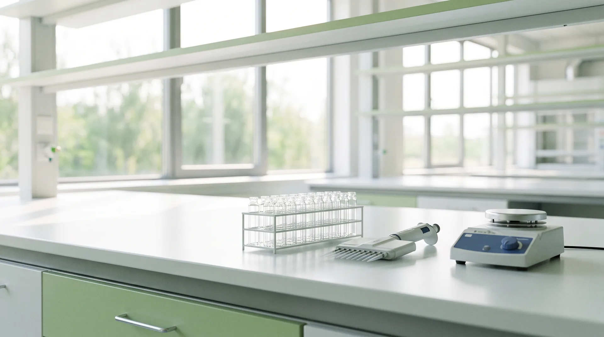

회사 소개
Restoring intrinsic balance.
Recovering optimal function.
Delivering sustainable breakthroughs.스타스테크의 철학 — Restore Balance, Advance Life

전달 기술을 축으로 한 바이오 사업
주식회사 스타스테크는 기존 해법이 흔들어 놓은 화학 · 생물 시스템의 균형을 회복하는 기술로 지속가능한 돌파구를 만드는 회사입니다. 자원순환 기반의 Chemical Solutions 와 피부 전달 플랫폼 기반의 Bio Solutions 두 축을 함께 운영하며, 이 사이트는 Bio Solutions 만 다룹니다.
바이오 부문은 경피 전달 플랫폼 TDS · T-TDS 를 개발하고, 그 위에서 화장품 원료 Penellagen®, 병의원 스킨부스터 Delvene®, 국소 치료제 파이프라인을 키우고 있습니다. 화장품에서 검증한 제형 · 공정 · 안정성 자산을 의료기기와 의약품으로 단계적으로 확장하는 것이 개발 전략의 골격입니다.
사명주식회사 스타스테크 · STAR'S TECH Co., Ltd.
설립2017년 · 해양 폐자원(불가사리) 업사이클링 기반 친환경 제설제
투자Series C 투자 유치 완료 · 밸류에이션 비공개
기업 홈페이지starstech.co.kr